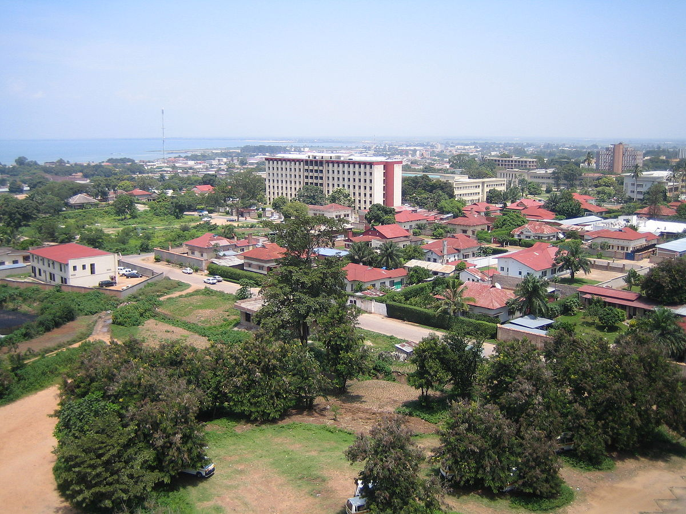

Stênio A. Bernardes
Burundi é um pequeno país da África Oriental, com cerca de 13,3 milhões de habitantes. Sem litoral e sobrevivendo com a agricultura de subsistência, enfrenta uma das maiores crises econômicas e sociais do mundo.
Você já parou para pensar como é morar em um dos países mais pobres do planeta?
A história do Burundi é marcada por exploração colonial e ciclos de violência, sendo colônia da Alemanha e posteriormente da Bélgica — país também relacionado aos piores genocídios da história no Congo. A administração belga reforçou divisões étnicas, favorecendo a minoria tutsi e marginalizando os hutus.
Mas o que ficou como legado desse período? Infraestrutura? Desenvolvimento? Na verdade, restam cicatrizes profundas.
Em 1962, o país consegue sua independência, marcada por interferências externas, tensões étnicas internas e transformações políticas. Apesar da independência, conflitos étnicos, golpes de Estado e assassinatos políticos continuaram ao longo dos anos.
Em 1994, Burundi atravessou um dos períodos mais sombrios de sua história, quando cerca de 800 mil pessoas foram assassinadas em apenas 100 dias, em meio a um genocídio que também devastou o Ruanda, seu vizinho.
A violência foi sistemática e organizada: listas de opositores e suas famílias foram distribuídas para milícias, e o horror se instalou nas comunidades. Vizinhos matavam vizinhos, maridos suas esposas, com medo de represália. Enquanto forças internacionais como a ONU mantinham presença, pouco foi feito para evitar o massacre.

Hoje, a economia é dominada pela agricultura de subsistência, responsável por 33% do PIB e mais de 70% dos empregos. Trata-se de uma agricultura que não gera excedente nem riqueza real — apenas garante a sobrevivência de milhões.
Não há expressão industrial, nem cadeias produtivas estruturadas.
O FMI realizou missão no Burundi em março de 2025 para avaliar a economia e discutir reformas. O país enfrenta inflação alta (39%), escassez de combustível, baixas reservas cambiais e crescimento limitado (3,5% em 2024).

A situação atual também é agravada por uma das maiores taxas de natalidade do mundo (4 ~ 5 filhos por mulher), o que aumenta a pressão sobre escolas, hospitais e alimentos.
Com uma moeda extremamente desvalorizada, o Burundi enfrenta enormes obstáculos para participar da economia global. Importar medicamentos, combustíveis e equipamentos se torna cada vez mais difícil.
Taxa de câmbio (2025):
1 US$ ≈ 3.000 BIF
1 BRL ≈ 500 BIF

O Burundi ocupa a 182ª posição no ranking mundial de PIB per capita — apenas US$193,01 em 2023. Mais de 87% da população vive com menos de US$2 por dia, o que escancara a desigualdade de renda e os desafios básicos para a sobrevivência.

Enquanto países desenvolvidos acumulam tecnologia, inovação e riqueza, Burundi permanece preso a um modelo informal, agrícola e frágil, sustentado por ajuda internacional e remessas emergenciais.
Este não é apenas um problema de um país africano distante. É um retrato de como o sistema econômico global falha com o ser humano. Uma tragédia viva, tratada como estatística.
A trajetória do país é marcada por exploração, violência assistida e negligência internacional. O problema nunca foi falta de recursos — a desigualdade é proposital. Num sistema em que para alguém ter, outro precisa não ter…
Não se sente mal por alguns terem tanto e outros nada?
Britannica – Burundi
CIA World Factbook – Burundi
BBC – Genocídio em Ruanda
IMF – Burundi Economic Review 2025